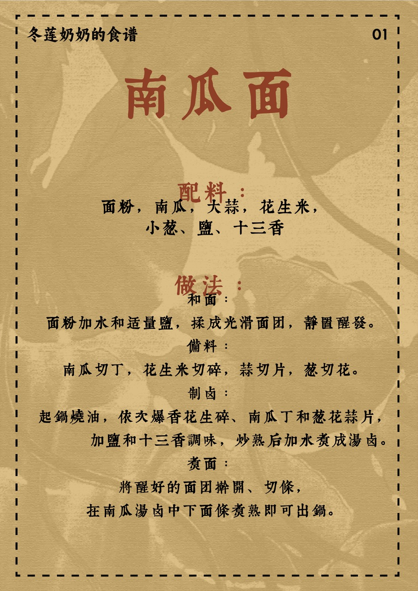

一
奶奶走后的第十年，我在老宅的厨房里又闻到了那个味道。
灶火升起来，麦秸烧过的烟，混着南瓜和热油。不是呛，是暖的。小时候拉风箱，我坐在灶台边的小凳子上，手抓着风箱的木柄，一推一拉，火苗就窜上来。她站在锅边，碎花衣裳，齐耳短发，手在围裙上擦两下，然后递给我一碗鸡蛋汤。
那时候回西安要赶早上四点半的班车。大荔到西安，班车要走三个多小时，天不亮就出发。三点多起来，她已经做好了汤。碗是热的，汤是烫的，她站在那里看我喝完。那个位置，就在老宅门口，左边是墙，右边是门框。她站在那里送我，也站在那里等我回来。
后来我在上海生活了很多年。有一次路过外白渡桥，忽然想到小时候跟她一起看《情深深雨濛濛》。她爱看琼瑶剧，我不确定她看懂了多少，但她坐在那儿，嗑瓜子，眼睛不离开电视。那时候她刚从老家来西安照顾我，不识字，不会用手机，没有认识的人。白天我爸妈上班，我去上学，她一个人在家。我不知道她怎么度过那些白天。后来她找到了麻将馆。
二
她把钱塞在肉色短袜里，每天输赢不超过十块钱。我问她赢了多少，她说"xiaobiedele"——不知道。赢了不说，输了也不说。但每次回来都挺高兴的。有一个事儿干，有一个小集体，我觉得比什么都重要。
她不识字。但她会算我回家的时间。每个周五下午，我还没出校门，她已经把饭菜摆好了。我不知道她是怎么算的。她从来不解释。我问她，她就说"xiaobiedele"。后来我也不问了。一进门，饭就是热的。这个事比任何解释都大。
她的口头禅还有一句："活人还能让尿憋死。"意思是天无绝人之路。她这一生，中年丧夫，老年丧子，爷爷走的时候爸爸才十六岁。她一个人把三个儿子带大，又帮各家带大孙子孙女。我不知道她有没有觉得"被憋死"过。她没有说过。
我们家有个群，叫李家麻将传承群。她走了以后，群还在。逢年过节，群里还是发红包，还是说"自摸""杠开"。她不会看这些消息。但我觉得她都知道。
三
她叫我夏娃。只有她这么叫。我上学早，五岁上一年级。粗心做错题，老师让回家重写，她从来不骂我，只说："她还小着呢，脑子装不下那么多。"后来我长大了，有时候做错事，还会想起这句话。不是给自己找借口，是觉得有一个人永远站在你身后，你可以躲。
她从砖墙里救下来一条狗。不知道谁家的，卡在墙缝里，叫了好几天。她搬开砖头，把狗抱出来，带回家，取名叫长命。她说长命好养活。狗活了很久，比她久。
她的手软软的，戴着一个金戒指，是哪个儿媳妇给她买的，我记不清了。后来她眼睛花了，穿针穿不过去，我来穿。她教我补袜子，怎么起针、怎么打结、怎么收尾。她的针法很细，每一针都匀称。我学了很久，也没学会她的耐心。
她给我弟弟做过一件小棉袄。布是碎花的，村里裁缝做的那种。她自己穿的衣服也是这种布。她很少买新衣服，后来我们给她买，她也穿，但不太挑。她个子不高，偏瘦，皮肤白，因为常年穿长袖长裤。夏天也是长袖，晒不黑。我问她热不热，她说"还好"。
还好。她说什么都是还好。
四
有一年夏天我跟她种萝卜。老宅后面有一小块地，她翻土，我跟着。她把犁好的地挖出一个个小孔，让我把萝卜籽撒进去，然后用光脚把土踩实。天很热，地是烫的，她蹲在那里，一个孔一个孔地挖。我踩了一会儿就不想踩了，她也没说我。
她不识字。有一天下雨，她坐在家里，拿着笔在纸上写。我凑过去看，是我的名字和她的名字。歪歪扭扭的，但看得出来她练了很久。她说："有知识真好，有学问真好。"我当时在上初中或者高中，在写作业，她坐在旁边陪着。我写多久，她坐多久。她不会教我，但她不离开。
她看我们喜欢吃薯片，就试着炸土豆片。切得很薄，下油锅，炸到金黄。味道跟薯片不一样，但我们都爱吃。她还做鱼丸，用西兰花和坚果做创新菜。我不知道她是怎么想到这些的。她没有上过学，没有看过菜谱，她就是自己琢磨。
你不能说她有多大的本事。但她做的菜，别的地方吃不到。
五
她最后一年身体很差。心脏做过搭桥，后来肺积水，抽了好几次积液。每天喝很多药，一包一包的，中药西药都有。她不说难受。她不说。
前一天晚上她喘得很厉害。我问她，要不要连夜回西安。我不会开车，我二伯也不会，家里没有车。她很坚持，说第二天一大早再走。她说没事。
第二天早上六点四十。我摸到她的手。不是普通的凉，是那种不像人的温度。我很害怕。我从来没有摸过那样的手。我打120。雾很大，救护车从县城过来要很久。六点四十五再打，问他们到哪了。
我和姐姐不会做心肺复苏。我们看过电视里的，但真的做的时候，不知道按哪里，不知道按多深，不知道按多快。我们试着按，不知道有没有用。
后来我去学了急救。在上海，一个周末的课。我知道了黄金四分钟，知道了按压的位置和深度。学完那天我在街上站了一会儿。我想，如果那时候我会这些，会不会不一样。
那张心电图的纸还在。但上面的印记已经没有了。
去墓地的路不好走。泥泞，窄，两边的墙被刷成了统一的颜色。小时候这条路不是这样的。但路还是那条路，奶奶躺在里面。
烧纸的时候，烟升起来。青的，轻的，往天上走。
六
她走的时候我说：夜深人静舍不得睡，再陪你最后一晚。人生最黑暗的几天，明白了没有来日方长。
现在每个假期都鼓励爸妈出去玩，每个周末都尽量聚。我带他们去吃饭，去公园，去他们没去过的地方。我不确定他们喜不喜欢，但我怕来不及。
后来经常梦到她。梦到带她去上海玩，去外白渡桥，去南京路。她看什么都新鲜，但又不太敢走远。我拉着她，她的手是软的，是暖的。
有时候在梦里知道她已经不在了。
我会在那个梦里多待一会儿。不急着醒。
如果她现在站在我面前，我会先抱她一会儿。然后带她去所有我觉得有意思的地方。去西安也行，上海也行，就在老宅院子里坐着也行。她想打麻将就打麻将，想看电视就看电视。我不问她去哪，她想去哪就去哪。
有一部电影叫《寻梦环游记》，说人会死两次。一次是物理世界的死亡，一次是被遗忘。
我留着她的小棉袄、新袜子、手帕、高铁票、中药、手机卡、处方笺、悼词、毛线、打不开的铁盒子。
这些东西不会说话。但它们在那里。

七
办那个展的时候，侄子侄女们跑来跑去，贴板子、钉东西、挪板子。他们觉得好玩。我要他们做，没有解释太多。有些事不需要现在就懂。
三个方桌拼成长桌，铺上旧床单。陶罐子里插上干莲蓬。去墓地之前，每个人胸前别了一朵莲花胸针。奶奶名字里有个"连"字，我们没有说，但都知道。胸针别在衣领上，走起路来轻轻晃。
灶火升起来的时候，二妈在灶台前掌勺，南瓜在锅里冒着热气。包菜炒粉条、南瓜面，一道一道端上来。五道菜，每道都是她以前常做的。我不确定味道对不对，但大家围在一起的时候，我觉得她还在。
全家福每家一张。奶奶不在的画面里，但我们都在。
晚上我们还做了花灯。纸糊的，竹条扎的，歪歪扭扭。孩子们画的图案，看不懂是什么，但他们高兴。点灯的时候，火苗小小的，风吹不灭。
灯挂在院子里。老了的老宅，一下子亮了。
献给我的冬莲奶奶。
我在这个世界的原点。